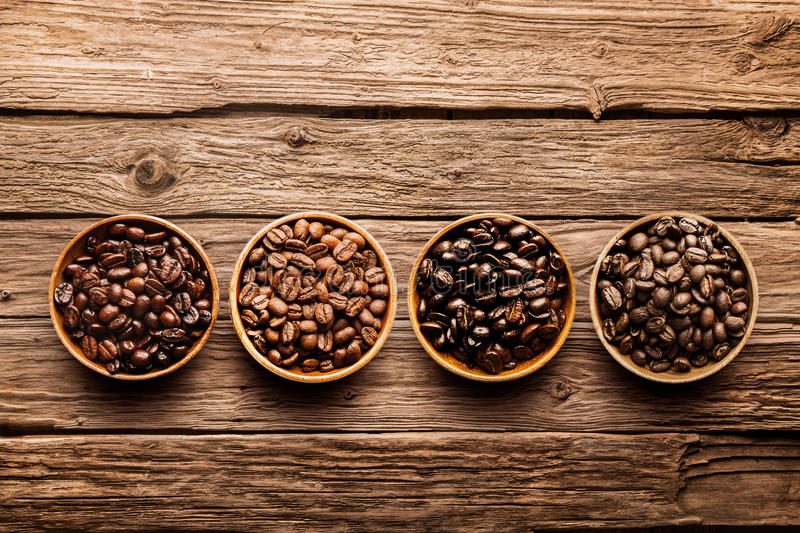

CAFENA more about

- I wanted to take this time to let you know how grateful we are to have you choosing us for your
coffee needs. Quality coffee is a passion for me and I am so thankful for your patronage which
allows me to do this. I wanted to share a little about our coffees, and why I think they are so
special. First of all, we buy our coffee from only the most reputable farms and mills in Kona.
Being a teacher in Kona for three decades, I taught some of the farmers and some of their
parents too - which goes a long way.
Not Too Small:
- Most boutique coffee companies sell an estate coffee, called this because every bean comes from
their estate which may be an acre or two of planted coffee - exactly how we started out. When
the beans are picked and dried, they end up in a variety of sizes or grades. These boutique
companies roast all beans of varying size together because they cannot afford to waste any beans
regardless of quality and they don't have enough beans for it to make sense to separate them
into different grades.
- What you end up with is an inconsistent roast - the larger beans might not be roasted enough,
while the smaller beans are roasted too much and taste burnt. Our “Estate” coffee is from a
single grade so you get a much more uniform roast at the perfect temperature for that size.
Not Too Big:
- The largest companies must buy huge amounts of coffee bean as cheaply as possible, which
typically results in lower quality beans. Low quality beans have less flavor, so these companies
roast the coffee darker to hide imperfections in the coffee and eke out as much flavor as
possible, regardless of what that flavor ends up being. But the flavor you often taste is
over-roasted or burnt. Consider a top grade tuna or beef.
- Connoisseurs typically prefer these items undercooked than overcooked, so they can enjoy the
natural flavors of the cut. Overcooked, you typically end up with a charred piece of meat that's
less flavorful and more burnt. Same thing with coffee. If you've ever had Starbucks coffee you
might already be familiar with the burnt taste I'm talking about, which they hide with caramel,
whip cream, and other goodies. There is nothing wrong with that. It's just not what we do.
Our Coffee Is Just Right:
- We buy only from reputable farmers and millers at volumes equal to several hundred acres. We
grade our coffees into different sizes and quality, throw out the lower quality beans and blind
taste our grades and types individually to find the best roasting temperature that bring out the
best taste for that specific size and coffee bean - different roasting temperatures for
different coffee. We do this constantly to maintain a consistent and high-quality roast every
time.
We Roast Only What We Immediately Need And Age The Rest:
- You may have waited a bit longer for your coffee but we can guarantee you received the freshest
coffee anywhere. Even though our roasted coffee can be stored for 4 - 6 months in a cool, dry
place, we don't warehouse roasted coffee. Even the coffee sold to stores are roasted and put
into stores well within a week. The coffee bean we buy, we typically don't roast immediately,
and instead age it for at least a year. Like a fine wine that gets better after some years
"resting" before being consumed, we feel our coffee is softer yet bigger because we age it to
reduce acids giving it a smoother taste. As you may have already experienced, you don't have to
add cream and sweetener to drink our coffee - it has a smoother and less acidic taste without
cream because of this aging process.